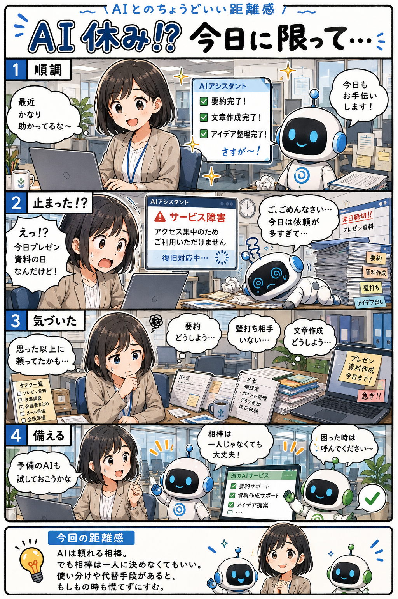

#037
AI休み！？ 今日に限って…
便利になった頃ほど、焦ってしまう。

メモ
AIを使い始めた頃は補助的な存在でも、便利さを実感すると少しずつ仕事の流れに組み込まれていきます。
だからこそ、障害やアクセス集中で使えなくなった時に「思った以上に頼っていた」と気付くことがあります。
AIを使わないようにする必要はありません。別のAIや従来の手段も選べる状態にしておくと、もしもの時も落ち着いて対応しやすくなります。
今回の距離感
AIは頼れる相棒。でも相棒は一人に決めなくてもいい。使い分けや代替手段があると、もしもの時も慌てずにすむ。